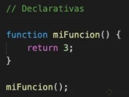
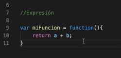

Funciones Javascript
Las funciones son procedimientos, un conjunto de sentencias o pasos que realizarán una tarea o cálculo con ciertos valores. Tenemos dos tipo de funciones en js, function Declaration y function Expression
function Declaration  function Expression 
Funciones declarativas = son asignadas a la memoria por lo que la podemos llamar antes sin problemas.
Funciones de expresión = NO son asignadas en memoria por lo que no pueden ser llamadas antes
Nota: De ninguna manera te mostrara donde esta el error, ni te dara un codigo a ejecutar, su objetivo es solo mostrar si tu Sintaxis esta bien estructurada o no.
Este es un simulador para garantizar si esta bien escrito tu Sintaxis
La función eval() en JavaScript puede evaluar y ejecutar cualquier código JavaScript válido que se le pase como una cadena de texto. Esto significa que puede recibir cualquier tipo de código JavaScript, incluyendo declaraciones, expresiones, funciones, asignaciones, llamadas a métodos, etc.
¿Qué es JavaScript y para qué sirve?
JavaScript es un lenguaje de programación dinámico que tiene la capacidad de ser utilizado en muchos dispositivos diferentes. Puede usarse en ordenadores personales, servidores web y teléfonos inteligentes. Es un lenguaje interpretado, orientado a objetos, débilmente tipado y dinámico. Esta aplicación se emplea comúnmente para el desarrollo web front-end y más recientemente para algunos desarrollos back-end a través de frameworks como Node.Js. o Next.Js. Tiene características como la programación orientada a objetos, funciones y herencia basada en prototipos.
¿Cómo nace Javascript?
Nace con la necesidad de generar dinamismo en las páginas web y que a su vez los usuarios y las empresas pudieran interactuar unos con otros. Fue creado por Brendan Eich en 1995 y se convirtió en un estándar oficial del World Wide Web Consortium (W3C) en 1997.
¿Por qué decimos que Javascript es un lenguaje dinámico?
Corre directamente en la etapa de Runtime, sin una etapa de compilación previa. Esto permite probar nuestro código inmediatamente; pero también es lo que hace que los errores no se muestren sino hasta que se ejecuta el programa. Lo que se ve a primera vista, cuando se analiza el código, es muy probable que no sea lo que se va a obtener cuando el programa se ejecute. JavaScript permite declarar (por ejemplo) variables cuyo valor (y tipo) solo se conocerá al momento de su ejecución en función de las condiciones dadas al momento de correrlo en un entorno real. En cambio, los lenguajes estáticos no compilarán en código ejecutable a menos que todos los valores (o tipos de valores) se conozcan por adelantado.
¿Por qué es débilmente tipado?
Porque los tipos de datos no están bien definidos en el lenguaje y permite, por ejemplo, operaciones entre numerosos y letras. Esto sucede porque el lenguaje asume tipos de datos que no necesariamente fueron los que se querían representar. Se pueden hacer operaciones entre tipos distintos de datos (enteros con strings, booleanos con enteros, etc.). Ejemplo:
- 4 + "7"; // 47
- 4 * "7"; // 28
- 2 + true; // 3
- false - 3; // -3
¿Realmente es Javascript un lenguaje interpretado?
Sí, y la razón es que el navegador lee línea por línea nuestro código, el cual le indica lo que tiene que ir haciendo, sin la necesidad de compilar. Todo esto es controlado por el motor de Javascript V8 del navegador
Qué significa que Javascript es Backwards Compatible
Todas las funciones nuevas que salen para Javascript no dañarán el trabajo ya hecho previamente, pero no se podrá utilizar en nuestro entorno de trabajo inmediatamente. Para solucionar esto está Babel, que permite usar las nuevas características del lenguaje, pero lo transforma a una versión que el navegador pueda entender.